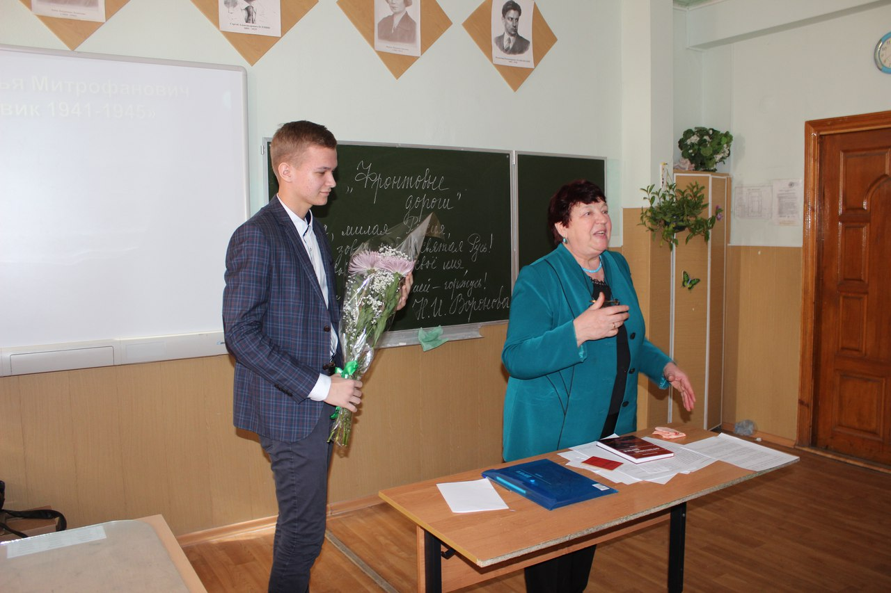
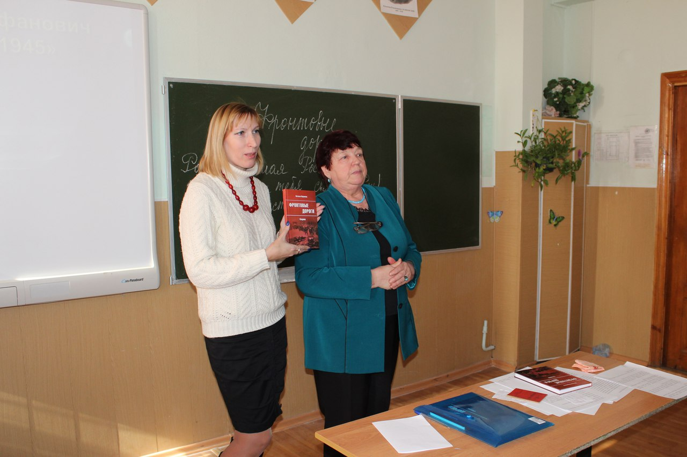

22 февраля член Воронежской городской общественной организации «Союз писателей «Воинское содружество» Воронова Наталья Игнатьевна была приглашена на встречу с учащимися школы № 87 в Северном районе. Мероприятие было проведено совместно с учителем русского языка и литературы школы № 87 Полевой Галиной Николаевной.
Наталья Игнатьевна выступила с презентацией своего сборника «Фронтовые дороги». Она провела несколько встреч с учащимися 5-8 классов. Ученица 8А прочитала стихотворение на военную тематику, а затем группа учеников из 8А класса возложила живые цветы у Вечного Огня.
В конце встречи Наталья Игнатьевна от имени Воронежской городской общественной организации «Союз писателей «Воинское содружество» передала в библиотеку школы книгу «Фронтовые дороги».
 